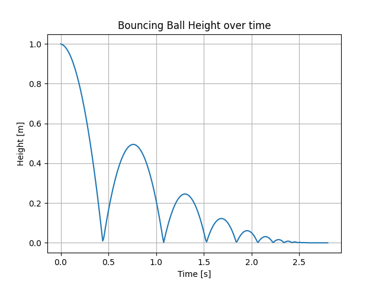
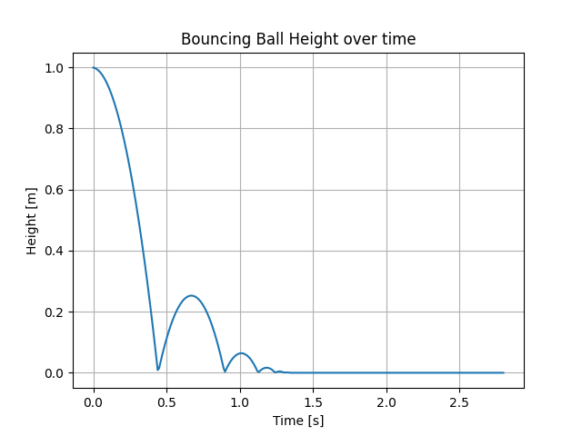
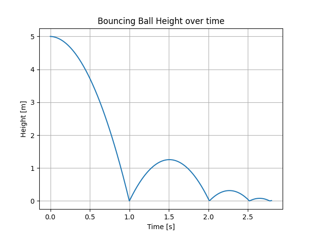
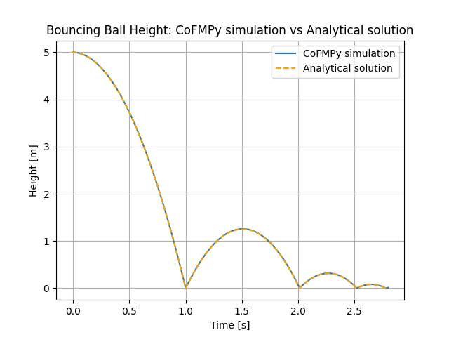

Note
Click here to download the full example code
The "Bouncing Ball"¶
This example demonstrates how to use CoFMPy to run the famous Bouncing Ball example. The FMU simulates a ball bouncing on the ground.
The original bouncing ball example¶
We will load and run the simulation of the Bouncing Ball FMU.
First, let's define the configuration for the Bouncing Ball system. Instead of using a JSON file, we will directly create the configuration in a Python dictionary.
from cofmpy import Coordinator
# We define a simple CoFMPy config dictionary with a single FMU and no connection
config = {"fmus": [{"id": "bouncing_ball", "path": "../fmus/BouncingBall.fmu"}]}
# We create a Coordinator object and start it with the config dictionary
coordinator = Coordinator()
coordinator.start(config)
# Let's check the default value of the coefficient of restitution `e` in the FMU.
# A variable in CoFMPy is identified by a tuple (fmu_id, variable_name).
e = coordinator.get_variable(("bouncing_ball", "e"))
print("Default value of coefficient of restitution 'e' (from the FMU):", e)
Out:
Skipping Fixed Point Initialization
Default value of coefficient of restitution 'e' (from the FMU): [0.7]
We now run the simulation for 2.8 seconds with a 10 ms time step. We retrieve the results and plot the height of the ball over time.
step_size = 0.01 # 10 ms time step
end_time = 2.8 # Simulation time in seconds
coordinator.run_simulation(step_size, end_time)
results = coordinator.get_results()
# The results is a dictionary with the time and the values of the variables.
print("Results keys:", results.keys())
Out:
Results keys: dict_keys([('bouncing_ball', 'h'), ('bouncing_ball', 'v'), 'time'])
import matplotlib.pyplot as plt
def plot_height(results):
plt.plot(results["time"], results[("bouncing_ball", "h")])
plt.grid()
plt.title("Bouncing Ball Height over time")
plt.xlabel("Time [s]")
plt.ylabel("Height [m]")
plot_height(results)

Variable initialization¶
We will now see how to set the initial values of the FMU variables. First, let's look at the variables in the Bouncing Ball FMU and their causality.
variables = coordinator.get_variable_names()
print("Variables in the Bouncing Ball FMU (and their causality):")
for var in variables:
print(f"- '{var[1]}': {coordinator.get_causality(var)}")
Out:
Variables in the Bouncing Ball FMU (and their causality):
- 'time': independent
- 'h': output
- 'der(h)': local
- 'v': output
- 'der(v)': local
- 'g': parameter
- 'e': parameter
- 'v_min': local
In the following, we will set the coefficient of restitution e to 0.5, meaning that
the ball will bounce less high than in the reference simulation.
The initialization of the FMU variables is done in the configuration file (or in the
dictionary here). The initialization key is used to set the initial values of the
FMU variables. The values are set before the simulation starts.
config = {
"fmus": [
{
"id": "bouncing_ball",
"path": "../fmus/BouncingBall.fmu",
"initialization": {"e": 0.5}, # Set initial value
}
]
}
coordinator = Coordinator()
coordinator.start(config)
coordinator.run_simulation(step_size, end_time)
results = coordinator.get_results()
plot_height(results)

Out:
Skipping Fixed Point Initialization
We can also set the initial height h of the ball to 5 meters. h is an output
variable but its start value can be set at initialization of the FMU.
config = {
"fmus": [
{
"id": "bouncing_ball",
"path": "../fmus/BouncingBall.fmu",
"initialization": {"e": 0.5, "h": 5},
}
]
}
coordinator = Coordinator()
coordinator.start(config)
coordinator.run_simulation(step_size, end_time)
results = coordinator.get_results()
plot_height(results)

Out:
Skipping Fixed Point Initialization
Comparison with the analytical solution¶
To validate the simulation with CoFMPy, we compare the results with the analytical solution of the bouncing ball model as defined in the reference FMU.
import numpy as np
def analytical_solution(time_points, e=0.8, h0=1.0):
"""Calculate the height of the bouncing ball at time t using the analytical
solution.
"""
g = 9.81
# Time and velocity of the fictive first bounce (negative because before t=0)
t_bounce = -np.sqrt(2 * h0 / g)
v_bounce = -t_bounce * g
h = np.zeros_like(time_points)
for i, t in enumerate(time_points):
dt = t - t_bounce # Time since last bounce
h[i] = v_bounce * dt - 0.5 * g * dt**2 # Height as a parabolic flight
if h[i] < 0:
h[i] = 0
t_bounce = t
v_bounce = e * v_bounce
return h
# Calculate the analytical solution
time_points = np.linspace(0, end_time, 1000)
analytical_heights = analytical_solution(time_points, e=0.5, h0=5)
# Plot the results and the analytical solution
plot_height(results)
plt.plot(
time_points - step_size,
analytical_heights,
label="Analytical Solution",
linestyle="--",
color="orange",
)
plt.title("Bouncing Ball Height: CoFMPy simulation vs Analytical solution")
plt.legend(["CoFMPy simulation", "Analytical solution"])

Out:
<matplotlib.legend.Legend object at 0x7f4c73f40560>
Conclusion¶
In this example, we have seen how to use CoFMPy to run the Bouncing Ball FMU. We have learnt how to:
- Load the FMU and run a simulation
- Retrieve and plot the results
- Modify the initial values of the FMU variables
Total running time of the script: ( 0 minutes 0.282 seconds)
Download Python source code: plot_00_bouncing_ball.py